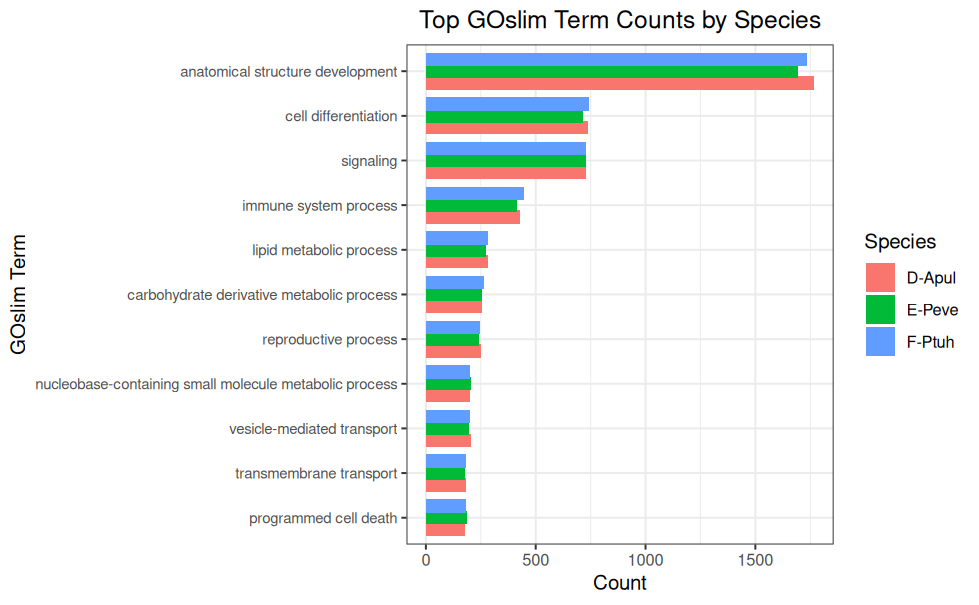

INTRO
This notebook annotated expressed genes with gene ontologies, assigned them to GOslims, and generated corresponding counts of GOs in each GOslim category, as part of urol-e5/deep-dive-expression (GitHub repo).
The contents below are from markdown knitted from 30.00-Peve-transcriptome-GOslims.md (commit 0b980cb).
1 BACKGROUND
This notebook will perform annotation of expressed genes, as previously determined by 06.2-Peve-Hisat.qmd (GitHub).
Briefly, the notebook will perform the following tasks:
Extract all genes from the genome, as GFF and FastA.
Create a subset of only expressed genes, based on gene count matrix.
BLASTx expressed genes against SwissProt database.
Get gene ontology.
Map gene ontology to GOslims and get counts.
Expressed genes were defined as those genes having at least one count across all samples.
1.1 INPUTS
Gene count matrix
Genome FastA
Genome GFF
1.2 OUTPUTS
Genes BED
Genes FastA
Expressed genes FastA
Expressed genes SwissProt IDs only file.
Expressed genes to SwissProt IDs mapping file.
Expressed genes to SwissProtIDs and GO mapping file.
Counts file of expressed genes GOslims.
1.3 SOFTWARE
DIAMOND BLAST (buchfink2021?)
bedtools (quinlan2010?)
samtools (danecek2021?)
Biostrings (h.pagès2017?) (Bioconductor R package)
GO.db (carlson2017?) (Bioconductor R package)
GSEABase (martinmorgan2017?) (Bioconductor R package)
2 VARIABLES
# DIRECTORIES
top_output_dir <- file.path("..", "output")
output_dir <- file.path(top_output_dir, "30.00-Peve-transcriptome-GOslims")
data_dir <- file.path("..", "data")
# PROGRAMS
blastdbs_dir <- file.path("..", "..", "M-multi-species", "data", "blastdbs")
programs_dir <- file.path("", "home", "shared")
bedtools_dir <- file.path(programs_dir, "bedtools-v2.30.0", "bin")
blast_dir <- file.path(programs_dir, "ncbi-blast-2.15.0+", "bin")
diamond <- file.path(programs_dir, "diamond-2.1.8")
fastaFromBed <- file.path(bedtools_dir, "fastaFromBed")
samtools_dir <- file.path(programs_dir, "samtools-1.12")
samtools <- file.path(samtools_dir, "samtools")
# FILES
count_matrix <- file.path(top_output_dir, "06.2-Peve-Hisat/gene_count_matrix.csv")
diamond_db <- "20250620-diamond"
diamond_output <- file.path(output_dir, "Pevermanni-expressed-genes.blastx.outfmt6")
genome_fasta <- file.path(data_dir, "Porites_evermanni_v1.fa")
genes_fasta <- file.path(output_dir, "Pevermanni-genes.fasta")
genes_fasta_index <- file.path(output_dir, "Pevermanni-genes.fasta.fai")
genes_subset_fasta <- file.path(output_dir, "Pevermanni-subset-genes.fasta")
genes_subset_fasta_index <- file.path(output_dir, "Pevermanni-subset-genes.fasta.fai")
genes_bed <- file.path(output_dir, "Pevermanni-genes.bed")
og_genome_gff <- file.path(data_dir, "Porites_evermanni_validated.gff3")
# THREADS
threads <- "40"
##### Official GO info - no need to change #####
goslims_obo <- "goslim_generic.obo"
goslims_url <- "http://current.geneontology.org/ontology/subsets/goslim_generic.obo"
# FORMATTING
line <- "-----------------------------------------------"
# Export these as environment variables for bash chunks.
Sys.setenv(
blastdbs_dir = blastdbs_dir,
count_matrix = count_matrix,
data_dir = data_dir,
diamond = diamond,
diamond_db = diamond_db,
diamond_output = diamond_output,
fastaFromBed = fastaFromBed,
genes_bed = genes_bed,
genes_fasta = genes_fasta,
genes_fasta_index = genes_fasta_index,
genes_subset_fasta = genes_subset_fasta,
genes_subset_fasta_index = genes_subset_fasta_index,
genome_fasta = genome_fasta,
og_genome_gff = og_genome_gff,
output_dir = output_dir,
top_output_dir = top_output_dir,
line = line,
samtools = samtools,
threads = threads
)3 Extract genes as FastA
3.1 Extract genes from GFF
# Read GFF, skipping comment lines
genome_gff <- readr::read_tsv(
og_genome_gff,
comment = "#",
col_names = c("seqid", "source", "type", "start", "end", "score", "strand", "phase", "attributes")
)
# Filter for gene features
genes <- as.data.frame(genome_gff) %>%
filter(type == "gene") %>%
mutate(
chrom = seqid,
start = start - 1, # BED is 0-based
end = end,
gene_id = sub("ID=([^;]+);?.*", "\\1", attributes)
) %>%
dplyr::select(chrom, start, end, gene_id)
str(genes)'data.frame': 40389 obs. of 4 variables:
$ chrom : chr "Porites_evermani_scaffold_1" "Porites_evermani_scaffold_1" "Porites_evermani_scaffold_1" "Porites_evermani_scaffold_1" ...
$ start : num 3106 8491 26133 30312 32615 ...
$ end : num 4488 11026 26404 42225 67628 ...
$ gene_id: chr "gene-Peve_00000001" "gene-Peve_00000039" "gene-Peve_00000112" "gene-Peve_00000117" ...3.1.1 Write genes to BED
# Write to BED
write_tsv(genes, genes_bed, col_names = FALSE)3.2 Create genes FastA
"${fastaFromBed}" -fi "${genome_fasta}" -bed "${genes_bed}" -nameOnly > "${genes_fasta}"
# Create FastA index
"${samtools}" faidx "${genes_fasta}"
head "${genes_fasta}"
echo ""
echo ""
head "${genes_fasta_index}">gene-Peve_00000001
TTACTGCTTCAGTATGTGAATTTCGATGGTGGCTTGACCGGAGTTAGACATGGCCCCCCTTGCTCGGAGTCCCGATCCCAAATCTCTCTCGTGCCAGTAGTTATCTCCTTTGAAGGGATTATCGTAATACATCCGGTACCAAAGATTGTAGTTGGCGCGTCTTTTACCACTGTAAAGCCAAACATCAAACCAGTTGCTGTACCAGTTGTAGTCAAATGGAACGGAATACATAACAGCAAGTGTTTTATCGATGTGTGGGATGTAGTATGTTAATACTCCTACTGCGCCTCTCGCAACGGGCCCCGCAGTTTTTCGTGCGCCGTAAAGCAAAGCTGTGCCTAGAAATAAGCAAACAAATTAGCAATTAAACAAAAATCATAAACATGATCATTCGTCACAATGATACATGGCAAACNTTGTGTCAGGTTAGTGATTGCTTATCTTTTCCCCAAATATTACACGCAAAGGGATTCTCATTCTGAACATGAATACTAAGTTTAGTTGGTTTAAGAAGCTCTTTCAACCCTGAAGTCATTTTGCCGTTCTGACAAAGCAAAACATAAACCTGTTGTCTGCAAAATTTCAAGAATGGGCAAATCCTCTAATACAGTTTCTTTACTCTTTAGGGTAAGTGGTCGCTGAGTTCGTCCTTGGTTTCATACGGTAATAGGCCCTTTGCACGCGATGAACTCATTTTACTACTACTACTACTACCAGAATCACTCGGGGTTTTGCTTTCTTGGACAAACGAGGGCTTTATTTTTCAAACCTCGCATAACCTGTGATCAGGCCCCCAAAACAAAAAGGGAAGAAGGACCGCCTGATTGCAGGTTAAATTCTTCGCAGAGATTAGCTAGAAAAATTAAATATGACAAGAAAACCAAAATGGATTCTATAGCAATAGATCAGACCTTTTTAGCTTGTATGGTTTGTTTACCCATTTCAGACCAAGTGATGGTACCCCAGAGAACTGTTTCTTTCAATGTCGTCTTTTGCACGTGCACCCACATGTTATGTATGCATAATTATATAAAAGACAAATTCCCCCAAGAACATCACGTGGTCTGAATTGGGAAAACAAAACAAACAAGCTAATGACACCATCCTGCATACTGGCCTTAGTGTTATTACTAAAAGAAAGGATTTTAAACTTTTATGTTATTAATATTAATTTTACCTGAAGAAACATCATGAGGCAAAACACGATTTGACGTCCCTGAATAAAAATATATGTTGACTGCTCTCCATTTATATCCACTTTCGTTATCAACACCAATGGCGACCTTGCGGCTTATGCTACCAAGGGTGTTTAAAATTGTTGTGAGAATGCCCAAGCCAAGTTGAGCACCGCTGATGACAGCACCAGCGTCAGCTAAAATTTT
>gene-Peve_00000039
ATGGGCATCGTTAGGCTGTTCACCCTTCTGCTTTTCGTTCTGCTGATAACTCAGTCAATCTTTGGGTCTCCCTTCAAGCAAGACAATCATGTCGAAAGGAGTCCTGGATCGTCCTCTAAACACACTGAGGTAAAACAGTTCTCTTTAAAATAAGATAGTCAATTGGTGTCTTGTGTTTAAGACGAACATGAAAGTGTCTCTTGGGGGTGGCGTGATATCTACGGAAATGCAACTCACTGTTCTAATCGGATCTCGGTTGTTTCACTAAAACAAAATGAACCCTAATCTCGGACCGAATATAAAACCGACTAACACCCCCCCCCCCCCCCTCCAGTTCAGAATTCTAATCTCGACACTCGCTTTCCCTTTTCTCCAAAACACCGATTACCCTTGTGAGTGTGTAGTGCTGCGAGTAGATACTAGGTAGTTTTACACCTTAACGCTTGAATGTATAGTAAACATTTTAATAATTTTAAGCCGTAAATCTATTGAGTTCTTTGTGATGTGTCCCTCAATAATCAATGTTCAGTTTGGCGAAGTGTAAACTGAATGAATACACAGCCATCATGCAATTCTTGGTGGTTTCGCTAAGGCTCCCAGCGATAATTTTAGCCGGCTTCCGATTTCATTTCTGTGCCTCAAATGTATTTAAATACACAGAGGAAAAATTAGTGAAAAAAAAAGAATACTCATTCCAGTTTGTATTCAGTGGAATGACCTTAATGGCCATACTTTCCTTCACAGATACAGGGACGACAAGGCTCGTCCACGATCTCTACTCGTAAAGAAGGCGACGAGAAAAACAAGCGAAAAGGTAATTGCATCAGTTGTTTAGAAGTTGCGTACCATAACCTTTGAAAACAAAAGGAAGAAACAAAAAGAAGCTGAAACGTAACTGCACAGGCTAGCTGTTTGGTAAACCAAACTATTCATTACAGTTGTTGGGTTACTCTGCTAAACGAAAACATTCATTAGCCGACTGTTTATTCAAACTTGGTTTGTTTTAATACCACTAAGTGTGCAACTAAAAATTTTATCTTGCTGTGTTCTTTAAAATTTTAGCTGACGCTGGTGCTGTCATCAGCGGTGCTCAACTTGGTTTGGGCATTCTCACAACAATTTTAAACACCCTTGGTAGCATAAGCCGCAAGGTCGCCATTGGTGTTGATAACGAAAGTGGATATAAATGGAGAGCAATCAACATATATTTTTATTCAGGGACGTCAAATCGTGTTTTGCCTCATGATGTTTCTTCAGGTAAAATTAATATTAATAACATAAAAGTTTAAAATCCTTTCTTTTAGTAATGACACTGAGGCCCGTATGCAGGATGATGTCATTAGCTTGTTTGATTTGTTTTCCCAACGTTCTTCGGGGAATTTGTCTTTTATATAATTATGCATACATATACACGTGGGTGCACATGCAAAAGATCAGACGACATTGAAAGAAACAGTTCTCTGGGGTACTATCACCTGGTCTGAAATGGGAAAACAAAACGTACCAGCTAAAAAGGTCTGATCTATTAGTATAGAATCCATTTCGGTTTTCTTGTCATATTTAATTTTTCTAGCTAATCTCTGCGAAGAGTTTAACCTGTAATCAGGCGGTCCTTCTTCCCTTTTTGTTTTTGGGGGCCTGACCGCAGGTTATGCCAGGTTTGAAAAGTAAAGCCCTCGTTGGTCCAAGAAAGCAAAACCCCGAGTGATTCTGGTAGTAGTAGTAGTAGTGAAATGAGCTCATCGCGTGCAAAGGGCCTATTACTGTATGAAACCAGGGGCGAACTCAGCGACCACTTACCCTAAAGAGGAAAGAAACTGTATCAGAGGATTTGCCCCTTCTTGAAATTTTGCTGACAACAGGTTTACGTTTTGCTTTGTCAGAACGGCAAAATGACTTCAGGGTTGAAAGAGCTTCTTAAACCAACCAAACGTAGTATTCTGAGTGTGTGATGTTCAGAATGAACATCCCTTTGCGTGTAATATTTGGGGAAAAGATAAGCAATCACTAACCTGACACAAATAAAATTTCTGGGTGGCAACAAAGGAGGACATGTTAATGATCTGACACATTCTATGTAAATTTTGTTTTTGGGTACACGACTCTATTCTGTGATGCTTGTTTGCCATGTATTATTGTGACGAATGATCATGTTTATGATTTTTGTTTAATTGCTAATTTGTTTGCTTATTTCTAGGCACAGCTTTGCTTTACGGCGCACGAAAAACTGCGGGGCCCGTTGCGAGAGGCGCAGTAGGAGTATTAACATACTACATCCCACACATCGATAAAACACTTGCTGTTATGTATTCCGTTCCATTTGACTACAACTGGTACAGCAACTGGTTTGATGTTTGGCTTTACAGTGGTAAAAGACGCGCCAACTACAATCTTTGGTACCGGATGTATTACGATAATCCCTTCAAAGGAGATAACTACTGGCACGAGAGAGATTTGGGATCGGGACTCCGAGCAAGGGGGGCCATGTCTAACTCCGGTCAAGCCACCATCGAAATTCACATACTGAAGCAGTAA
>gene-Peve_00000112
TTCTGCTCTCTATGTTTAGGTCAGCCTTATCAGCGTGGTCTCACAGCTATTCTTTGCACGATAGGCAGTGATAGCATCACTAAGTCTGTCATCCATAAACTTACTGTCTTGTTGGCCCAACAGTACTTCATAAACTTTATTCACGCATGGCAACACCGTGATAGGTCTATAGTTTATATCCCATTGTTTATCCAGTTTATCATCCTTCTTATGTACTGGTGTCCATTCCCCACGCTTAAGCTTTGCTATCCATTCTCCATTTCTAATCGCT
>gene-Peve_00000117
AACTTTCTTGCTGCAGTGAAGGACCTGAAGATACTAAAAACTCTGAGGTGAGTACCCCAGTAATGATTGTATTTCGTACGAAAAAAGTTAACAGGTCTTTGGCTAAAGAAAATAGATTTCTAAAATAATATTCTTGTTTTTAATAACGAAATTTCCACTGAAAGCACTCATTTTGCGACAGGTTTTAGATCCTTTGAGCTTTATGTTTAGCTCAGTGTTGCACACTTTTATGTTCGATTCGATTTTATGTTCAATAAACAGCCTGTCCGGCACTTTAAAAAAAAACTGAATAAGACTTGCTAAAATTTCTTTCATGTTTAAACAATCAATTGAAACTCTTAGGACTATTCTTGTTTTGCCTTCATTAAGCCTGTTCAATTCACTTGGCTGTTCATCATGTCAAAACCAAATTTTGGCGTTACTTTATCACCTATGCAGCTCAACCTTTCCTTGGTTTTTCTTTCGATTAAGTTTCTCGTTCTTTACCTAAAGCTGAAAAATCGAAAAAACCTCCAAACCAGTGCAACACTGACAACTTTTCCTGAATTTTTAATTGAGGAATAAAGCTTTTAATTAACTCCAACGTCAGCTTAGTAAGGTGCTTCCTTTTCAGACACAATCGTGAGGGAGAGGAATAATTTTGGGGAAGTTTCCATTAATAACTGTTCGCCAGAAAATTACTTTAAGATAAAAACAACTGAGTTCATGTTTTTTAAGACTATAATTTTAATGGGAAACCTGTGTTGATGCGAGAGTTTCAAAATTTTTCGTATTTATGGCATGCTTTTTGCATCAACATTTTCGCAGTTTCAATAACCCTGTCAAACAATACACACTTTTTGTTTCTTTGGCAATGTTTGTAAACCTCCTGGTCTTCTCAAACTTAACTCGAGAAGGAAAATTAACCGGGTTATGTTTAATAAAGCTTTTGCTTCACGCAAAAATGAAATTTCGGCACCCCATGTTTTCACTTGAATTTAAGTAGTTACATAAGCTTAGCTAAACTTTCATTTCCGCAAATCAATAAAACAGCGTTAACGTTGTGCGGCAAACTTTGCCCCTAGAATTTCTATCAGTGCTTTTTCCTTTCTTGTATAAATATTTTAGGTTTTTAATTGCCTTTAAGATTCAGAATGGAGCACACTGTATTTGTCATCTTTGTTTTGATCCTTGGAATAACTGTCACCACCTTGGGCTCTCCGATGTCAGACGATCATAAAGACGGCGATCCTGAACTATCTCCAAGGCTTAAGGTATACAAAAACGTTTTTTAAGGAGTTATTTTGCTCGAAATTCCTGTGTGGAAGCTGCATTTTTTTTATTCATCAGAGACCTCTGGCACGGCCTCTGAGCAGTACTGTGGCACAGCTGTGTAGCCGTCTCGTTACCCTTTCAGCAGTTAGTTAAGCTAATTCAATGGTTACTTGTTGTTTTTTGTTTTTGTTTTTTATCAAAATGATAGAATTTTGTTTGATCAGTCTGTATCGCCCATAATGCACCACGAAAAGCATAGTCATTCTTTAACGACAGGAAAAGGGACATTGTTTTTGTTTCGCAAAACAAATAAAAAACGAAAAGTGTGTTTTAACTGTTATTTACCGTTCTCTGAGCCTTCCCCAAATTCCAAAGTTTAGATAAGTGATTCTGCACAATAATTGTTCTAGCTGGTCTAGTGTAGCCGGAAACACTGGGAAAGTTAAATTAATTGGTGCTGTTGCCATTTCATTATTTTGTTTTGCATCTGGCTTGTTCATTTAAACTTTCCGCTAATTCTTATTTTTCCACACTGGTCATCCCATTCAGAAGTATCTCAAATAGGCTATTTTTCAAGGAAGGAGAAGGACAACTGGGGAAATTTAACTTAGAAATGACAAAAGAATTAGGTTAAAAACATGTATATTGACTTTAATTAAAAACCACAAATGTTTCTGTTTGATATAAAGAAAATTGAAGGACTGAGAATGCGTTCAAATCAATCAAAAGTCGCATTGGCAAAGGATGCTGAAAAATCAACAAAAGTCCAGGTGAAGTTATTGTTAGCCGTTCTATTTCTCATTTAATCATACGAGTGATTAACAAAATCGGACGACCGCGTAGCGGGAGTCCGATTTGTTTAATCACAAGTATGATTACAGACCGAATTGGATGACACGAAGTTCTGTTACCAATTAATCATAACTTTAACAAAATTTGTGATATATAGGGCTCTTTTTAAAATCAAAACCAAAGAAATTCCAAGATTTTTTCGCTAGCAATGAAAAAAAAGCCATTTAAGAGCGCGCGTGATGGCGCACACTGTCCAATTACTTATGCATGACGCGTACTGTCCTATTAAACTGTCCTATTAAGGCTGAAATCAGGGCAGTTGAGAACCAATCAGATTTGAGAATTTTGTTATAGTTATGATTACAGACCGAATTGGACTCCACTCAGTCCTGTTACCATTACATACTACTGAGCATATACACACGGGAAAACGCGATACTTATCTTAAACGAAAATTCACGGGTAGCCTGCGAGGCATGTTAATACTATCGATGCATTGGTACCGGAGAAAGAGAAATTCAAGTTAGTTCCAAGGGAAAATATTTCACCCTTCAATGTCAGCGTCTTTGGTTGTCGCCAGCACTACCACTATGGTATAAAGAGAGATCGTATAAAAAAAATAAACTTTGCTTGAACATATTTATCTCGACAGGAACGAAAAGAGCAAAGGACCAAGCGTCAAGAACCAGGTCAGTAGTTCATGTATGACCCCATGAAATGTCCTGAGACACCAGTGCCGTGTCGGGTCTCTAGGCACAGAAGCAAGTGTCCAAGAACCAACACGTAATATACCTTTCATTTCCTTCTTTATTGTGTAACATAGGTCAGGTGTTCATACGTTAATTAATTATTTATTTATTTATTGAGAAGCAATAACAGACCCCATGCAAAGGTCTGCTCCCAAAATACAAAAGAGATCCTCAAAATTTTTTTCGAAATTGTATGGCTTAAGACATCTCGAAGAGTCTTTCGTGTTGGAGCCCAGTATGGACCCAGTGGAGGCTGCGAGTTTATATATTATAAATTTGCCGCAAGTGGAAGGTATCTTGAACATATGCCATGCATTTGTAGGGACCGCGGAGCAGGGTTTGGAGTTGTGGGGGGAGGGGGCAGTTAATCTGAACCCGTAAGGGTGAGCCTACTAGGGGATACAGGGGCATGTTTCCCCTGTAAAATTTGATTTTAGGAGTCCTGAAACGGCTAGAAAAGCACCTAAAACTATTATACTTAAATAAAAGTAACGCAAGGCCAAATTTTTAACGATCATATCGCTGCTAAAGTCTGTGAAAGTTGTAACCGAGCTGGTGCTCCTTCAACTGGAAAAGGCAAGATAATTAAAAGGTATAATCGTACCAGTCTCACAATATTTAGGCAGTAAAATAAATCCAACTCCATCAATGACTTGTGCCTTGTTCGAAGTTGTTGCGGATTGGCCGCTTCATCTTCTGACAACTGAGTATCTGTCATTATTGGCTCAAACCTACCACACCACGCTGTTGAATATTTTTAAAAGACGTTTTCTGAACGTTCTTCCCTTTTTATCCCTACCAAAGCCTCTCGTCAGGTTTCGATCAGGTTCCTCATTGCGTGTTTCCAACTTGAAGTTTAAAACAGCATTGATAGAAGAAAGAAGATTCAATAACAAAACCTTCGTAACGTCCCAGTGTAACAAAACCAAACATTCAGGCCTCCTGTTGTTCAATAGGTGGTTAGCGCTACTCTCTCCTCCGCAGAGGCGTCTTTGTGTCGTAGGGAGGCTGGGGAGAAAGAAATAGAAAGCGCGCGGGGCACGGTGGGAAGGGGAGAGAGAGAAAAGAGGCTCCCGTCTTTTCCCTCTTCCCATCTCCCCCCCCCCTCCCCCCCTCGCACTTTTTATTTTTCGATTATTGCTATTTTTATTGTGATACCCAGCAAGAGCCTCTGCGGAGGAGAGAGTTAGCGCTAGCCGACGGATAAATCACTATCCAGTGGATAAGTATTAGGGGTGAATCATTTGAGCTATCCGCTAGGTAAAGATTTATCCGAGCGCTATCCACCTTTTGAACTACTGAAGCTGGCGGTAAAACATTGATCCAAAGGCAAATTAATTCTGGAAAGAAACAGAAGTTGTTAACTCCATTATTTTACCGTCAAAAATCCAAGCGTCCTTTCAGCAACAATAAGCCTTATCACGGTTGTCGACGACATCTTTTGAAAAGTGGGCAACGGCGTGAGAAATTACAGTGTTTGTATGAGAATCTAATATCGAATAATTTCCCTAAAACGGCGGTTCTGAAAAAGATATGAAGTGTAAACTAAAGCTTTGACTCCTAACGATTCTACTGAAAAAATGTAAGGGCGTAACATGCAGTTACATTCGCTAGAACCACTTTATAAAATTTTCTATACATTTGTCTGTAAAAATTTCTCTTCCGACTAAAATTTTCCGGGAAAAATTGCAGACACCGTGAATATATGGAAAACCTAAAGCAAGCGTTCTGGAGAAATTGAAGCACAGTAACAGCCCCCAAAATTTGTTAGTAAAATCCTTTCCTGTGTAGCTTTATTTAATTCATATATCTTTTTTCAGAACACCCGTTTTACGGAAATTATTCGACATTAGATTCTTCTACAATCACTAATTTCTCACGCGGTTGCCTACTCGTCAAAATGGCGTCGAAAACCGTGATGAGGCCTGGAAGGAACAAAAAGAAAAAACAATAGTATTGCAAAGTTTACAAACCAGAGACCAGATTCCGGACAGTTATGTGTTATCACAGCATGGAATTTTTGTCACTGCAGGCGCAGACGTCCCTCCTGGCGAGACGTCCCTTGCGGCGAGGAGCGAGGAGGGAAGGCTGTATTCGCAGGCTAGCGATTGTGGTGATCGTATAGAAAAAATGCACACCCCTAAACGTTTTTGTTTGGCTTTTTTCACACATAGCTGACATAATCGCAGCGGCTGCACTAACTGTTGGCGTACTTCAAGGGATCTTGGATGGCATCATAGGTGTAGATCGCAAGATAGCCATCGGCATCAAGAATAGAAGCGGATATAGCTGGGGAGCAATTGATATTTACTTGCAACAAGGAGTTACAGATAGGGTCATTCCCCGTAGAGTCGATAATGGTAACTATGAATGTCACGAATTTAGCATGAAAGCGCTTATCGGGGACACTGTTATAATGTCTCCTTTAGGAGACGGGGTGGCCATTTCTACGTAGTCTTCGCCCAATTTGATTAATCACTTTTTGTGCTGGAAGAGAAACAAGTCAGTACGTGCCCCTCCTTCAAATTTTTTTCCATTACTTTAAGTTTTTGTTATGGTTTTAGCTTCTCCCTCTTCTTCTTACTTAGGATTTGAGCGTAACCCATTAAGGTAGCTCAAGCTCGAAATATAAATTTGACCAGAGCGCCGTTGTGTCGAAATATGAGGATTTGTGTGGGAAAACTGATATAGCTTTTTAAGGGGGAAATTCGGCTGTTTGTTTTAGGGGGGACATGGGGCTGATTTGAGAAGGAAAGAAATAAGGGAAGAAAAGGTATACACATAAATGACCAGTTAGTTTGGCATTTGTCTACTAATTATTCTCTTCATATTTTAATTATTAACCTCCCCAAATTCAATTTTCCATTATTTTAAACATTTTCCCCCAAATTTTATTCATCAAAACCATCCAAAAACAGTCGCACATTGAGCCAACGACAACGACCTTATTGAGCCTTTTATTATTCAATGAAGTCTTGTCTAGATTTGGAAGAAAAAGAGCAGAAATAACGAAAAACAATGCTGTTGAGTAGAATTCCCCCTTTACTAAAACTGTAAACCAGTATTGAACAAAAACTTAACCAGGTCTAGTTCTCTTTTTGTTTGCCATTTTGCCTGATGTGTGGTTTATTGGTGGCCTTTGGTCCACTCCGAGTTTTGGTTTATATACCAACCCTTTAAAATTAAAGACCCAAAGGTCAGGGGCACCCAACGAGAATATAGTTCAAAACCACTTAACATAGCATTTTTGAACGTAATTTAGTCTTTAAACTGTAGATATAAACATATTTTTATCCCCTAACAATTTTTCATCTGTTCGGATTTCCTAGGTGAAAATCTAGGGATCCGAAAATTATAGGGATCAAAACTTAACTTTTCGAAAATTTCAGTCAGAAAAAAGGCTCCCGAAAATTCTAGATGACCTTTTTAGGGTAAAAATCCGCTTAAAATGGGCAATTGTAGCATTTTTTACATGTTCGAAAATCCTAGGAGAGGCAGGCAAGCAAGAAATTTTATAACAAATGTTCCGAAACTTCTAGATCTCAAATCGTCTTCCGAACAGATATTTTCCGAAAATTGACGTTGGGTGCCCCTGAAAAGTCGATAAGAATTCACGCAGGACGAAAAGAAACAAAGAACTAAGCGAGGTAGAACCGAGGTAGGTTATTTCACAATGCAACACTGTTGCCCAAATGTTAACCATATCGGCTTTTCCCCTACAAAACTCCATATTTCGGCTCATATCTCGAGCTTGGGAAAAAACCTCTTCGACAAGTTATGATGTTGTTTTCATGATGTTGATGATAAGTTCATTCAATATCGTAAATGCTCTTGGTTTTTGGCCATCTCAGTTTTAAAAGGAATAACACACAAACTGTGGTTAAAAACATCAGAAATAACAAACGCATTGTGTAACTGACTTTTATAGAGGTCTTTATAATATCGAACTTGACGTTTCGTATCCTTCAACTGACATCTTCAGAATTGACTGTTAAGATGAGTAGTAACTACACTTAAATAAAAAAAAGAACAAAGTAAGATAAGTAACTAATTAACGTGAAGGAAAAAACAAATAAATGTGACAGATGAGAAAATTTCCATGAAATTATGCAAACTAGTTTAAGTAAAGCTTTTCGCTGCTTATATTTTCATTTAGGGCTGGTTTTTAAAATCCCTAATAAGGTTATTTTCCAAAACACGCAAAACACACATCGCATCAAGTCTCTTTTCCCCGACAAAGACAGGCTCAACCGTTCTCAAATGTCCAATGTTGTATATAAAGCTAGTTGTTGGGACTGTCTGGATTTCTACATTAGCAAAACCACACGGAGATTGCATGACCGAAAAACTGAACACTTCAAGGCAATCACCAGTATTAACGGTCATTTATCAGCTATTGCAGAACTCGTCACTTCAACTGTTTACAATTTGAAATGGCACCATTTTGACATTTTAGCAAGAGGAAAATCAAATACCGATTGTAAAATCAAGGAGGCTCTTCTTATTAGGGATTTAAAACGAGCCCTAAATGAAAATATAAGCAGCGAAAAGCTTTACTTATACTAGTTTGCATAATTTCATGCAAATTTTCTCATCTGTCACATTTACTTCTTTTTTCCTTCACGGTAATTAGTTACTTAACTTACTTTGTTTTTTTGATTCAAATTTAATTACTACTCATGTTAACGGTCAATTCTGAAGATGTCAGTTGAAGCATACGAAACGTCAAGTTCGATATTATAAAAGTCAGTTATGCAATGCGTTTGTTATCTCTGATGTTTTTAACAGCAGTTTGTGTGTTATTCCTTTTAAGTTTATTCAAGAGCCATAATGACCATTATGGCTCTTAGTTCATAATTTTACTTTAAAAAATAATGTAAAAAGTAAGGGAGAATGCCCGCAGGGTATAGAGGAGTTAAGTTGATTTTCTTTATGGGTACCTGCAGTTGCCTGCAAACCTCGCTTTAGGTATGTGACTTCCCAAAGGGTAGGATTTTTGCGCCGTTTTGGTTTGAGAACGGGTACACGTAGGGGTCAAACCACCCCCCAAATGTTTCATGAAACCTAATTTTGGTTATTTTCAACATTATTATACTAAACTTGTGGTGTTTGCTCAAATTGATGTCCACTTCAATTTAAGCTGAAGAATTTCTCAAAATGGCACATAGCGGCGTCACAAAGGATGACGTCACAAAAACCAGTAAAGTGAAATTTTTAATTATTATTTAAAGTGTCTCATCTAAAAGTGGGTTAGCCTGGATTTCTTCCGATTACTTCGAGTCGTTATTACTCCCTCAGTAACGTCTGAATCGACCGGCCGTTAATGCCGCCAGTGACGTCAATACTCCTTTGCTTTAATTCATGCAAAAAGTTAAACACGATTTTTAAGTGGCAAACCAAGAAATATCGTTCGGAAATGTCTACATGATACAGAACGGTTGACAGAATTGCTTTCATGCGTTGCGTGAATTTCTCGAACGTTCTCTACGTTTTTGGATTATTCATGAATAATTAATTAGGGCATGTTTATATTTCAGCATGAGTCAGCAGATTTGCATCATTTACTGAAATTATAAAATATGTCGAAAAGCTACTACTATTCGCTTGTTTAGTATTTTCTAGAACTTTATGTCAAACGGTATACAAGTTCCAAGCGAGTTCTTTTGACGCTCAGGCCACTTAAGGCATGACTATCTAATTAAATATGCATATTTTGATAAAATGCTATTTAGAACGGTTTGCTTCTATCAATTATCCTAAAAATTGAACTGCAAATGTAGCTTACTGGCCTTAGCAATATGAGTGCATTTTAGAGGCCCAAATTTTCGTCACGTGACTGACAATTGAGAATTAACGGTCAAAATATTTACTCTAAAATGAGGAAAGGATAATGAGAGAGTAACAAGTTCTTTTAGGTGCATTTCGGAGACTACTAAAAAAGGTTCTTAAAAATTCGCCTTGTATGTGTGTTTACGTTATATAGGAATTGGTAAATAAAAGAAAAAGGGTCACGTGACTTATTAATGAGTTAAATAGCTAATAGGATAAATAACATTTTCAATCGTACAAGGCGAATTTACGATTTACACTGTTTATGTAACATTTTGGTAGTGAAAATTCCTAAGATTAAGATTTGCAACCCTTCCCCGTTTAGGAAAACGTGTTTTGTGACGTCATTGACGAAGCAATATCACGTGTTTTTTTCTTTGAGCCACATGTGTATCTCACTTTTCAGGATTACTGATGAAAGCAAACCGTTCTAAATAGCATTTAACAAAATATGCATATTTAATTAGATAGTCATGCCTTAAGTGGCCTGAGCGAACAAAGTTTTTTCCCACGAGTCTGGAGTGCTGTGTTTAGTCAAGTGTGACGAAGGTCGATTTTCAAGTTCTGTGTTCACATTTGGCGGAAGCCGTAAGATATCTGAAGTTCAAGTGAGTGGTTTGTTATTATTGGCAGAGGCTGTTTAGTTTTACTTAAGTTCAAGTCAAGTTTGTGTGCTGTGTTTGCTGGATGCTGTGTTTTAAAGCTCTGTAAAGACTATGTTCCTTTGGTATTAAACTTCCTTGTGTTAATCCGACATCCCTGCGTGCTGATCGTCAGTGAATAATTATCCTCAAAACATTCGAACTCGTAACATTGAGTTTTAGCCAATTCCATGCTCAACGTAATTGACTCCTTACCCATGTCTTACATATCTTTAATCAGTACATGAGACTGCTATGCTGTTTTTGAAGCCAGATGTAAGAAAAATAGAGAATTCTTTTTTCGCTGTTTGTTTTGTTAGACTTGTTATTCACCGCTAGTANNNNNNNNNNNNNNNNNNNNNNNNNNNNNNNNNNNNNNNNNNNNNNNNNNNNNNNNNNNNNNNNNNNNNNNNNNNNNNNNNNNNNNNNNNNNNNNNNNNNNNNNNNNNNNNNNNNNNNNNNNNNNNNNNNNNNNNNNNNNNNNNNNNNNNNNNNNNNNNNNNNNNNNNNNNNNNNNNNNNNNNNNNNNNNNNNNNNNNNNNNNNNNNNNNNNNNNNNNNNNNNNNNNNNNNNNNNNNNNNNNNNNNNNNNNNNNNNNNNNNNNNNNNNNNNNNNNNNNNNNNNNNNNNNNNNNNNNNNNNNNNNNNNNNNNNNNNNNNNNNNNNNNNNNNNNNNNNNNNNNNNNNNNNNNNNNNNNNNNNNNNNNNNNNNNNNNNNNNNNNNNNNNNNNNNNNNNNNNNNNNNNNNNNNNNNNNNNNNNNNNNNNNNNNNNNNNNNNNNNNNNNNNNNNNNNNNNNNNNNNNNNNNNNNNNNNNNNNNNNNNNNNNNNNNNNNNNNNNNNNNNNNNNNNNNNNNNNNNNNNNNNNNNNNNNNNNNNNNNNNNNNNNNNNNNNNNNNNNNNNNNNNNNNNNNNNNNNNNNNNNNNNNNNNNNNNNNNNNNNNNNNNNNNNNNNNNNNNNNNNNNNNNNNNNNNNNNNNNNNNNNNNNNNNNNNNNNNNNNNNNNNNNNNNNNNNNNNNNNNNNNNNNNNNNNNNNNNNNNNNNNNNNNNNNNNNNNNNNNNNNNNNNNNNNNNNNNNNNNNNNNNNNNNNNNNNNNNNNNNNNNNNNNNNNNNNNNNNNNNNNNNNNNNNNNNNNNNNNNNNNNNNNNNNNNNNNNNNNNNNNNNNNNNNNNNNNNNNNNNNNNNNNNNNNNNNNNNNNNNNNNNNNNNNNNNNNNNNNNNNNNNNNNNNNNNNNNNNNNNNNNNNNNNNNNNNNNNNNNNNNNNNNNNNNNNNNNNNNNNNNNNNNNNNNNNNNNNNNNNNNNNNNNNNNNNNNNNNNNNNNNNNNNNNNNNNNNNNNNNNNNNNNNNNNNNNNNNNNNNNNNNNNNNNNNNNNNNNNNNNNNNNNNNNNNNNNNNNNNNNNNNNNNNNNNNNNNNNNNNNNNNNNNNNNNNNNNNNNNNNNNNNNNNNNNNNNNNNNNNNNNNNNNNNNNNNNNNNNNNNNNNNNNNNNNNNNNNNNNNNNNNNNNNNNNNNNNNNNNNNNNNNNNNNNNNNNNNNNNNNNNNNNNNNNNNNNNNNNNNNNNNNNNNNNNNNNNNNNNNNNNNNNNNNNNNNNNNNNNNNNNNNNNNNNNNNNNNNNNNNNNNNNNNNNNNNNNNNNNNNNNNNNNNNNNNNNNNNNNNNNNNNNNNNNNNNNNNNNNNNNNNNNNNNNNNNNNNNNNNNNNNNNNNNNNNNNNNNNNNNNNNNNNNNNNNNNNNNNNNNNNNNNNNNNNNNNNNNNNNNNNNNNNNNNNNNNNNNNNNNNNNNNNNNNNNNNNNNNNNNNNNNNNNNNNNNNNNNNNNNNNNNNNNNNNNNNNNNNNNNNNNNNNNNNNNNNNNNNNNNNNNNNNNNNNNNNNNNNNNNNNNNNCCCCCCCCCCCCCCCCCCGACGTCGGTTTTTAGGGCAACACAGCGTGGCAATGTTGGAACAATGTTGTAACCATTCGCAACAATGTTGCAAAATCGTCGTTGCGAGTCGTCTCGTGTAACATCACCTTAAAGATCTTGCATTGAGCATTGAAACTACCAACTGAGCGAGGCCACGAGGTTATATATTTAAACGTTAAGACGTCAGAGAATTGATTGATGTGTTCAATTTTTCCTCTGGACTCTAAGGTTAGCCATTTTCCTGGCTGCCAACAGAGCTGCCAACTTGTTGGCGTGGATTTGAACAATGGGGAAAAGAGAACAAAAAAATTAGTCTGTAGTACAGTTTGAACTGAATCTGACTCAGCTTTTTCTTGCTTGTGTCTTCGAACTCGTTTCTAGATAAAGCACTGCTTTTCAAAGCACGAAGAAAAAATAACTTCTTTCCAGAGGGAGTATATGGAGTAATGACGTACTGCATAATCGCCATTGACAAAACGCTGGCTATCATGTTTTATGTTCCTCATGATCAAACTTTTGACAGAAATTGGTGGAATGTTAAGCTTTACAGTGGATATAAAAGGAGCAACTCTCAAATGCTTCACGAAATGTATGAAGATCATAGCGCTATCGAGGGTGATGCCTACTGGCACTATAAAGACCTGGGCCTGGGATCAGAGCTTAGAGCAACTGGTGCCATGGCTTCCTCTGGTGCAGCTCATCTTATGATTGAAATAAGCAAGCAGCACCGAAAAAGACTTTAA
>gene-Peve_00000122

gene-Peve_00000001 1382 20 1382 1383
gene-Peve_00000039 2535 1423 2535 2536
gene-Peve_00000112 271 3979 271 272
gene-Peve_00000117 11913 4271 11913 11914
gene-Peve_00000122 35013 16205 35013 35014
gene-Peve_00000008 2351 51239 2351 2352
gene-Peve_00000013 21088 53611 21088 21089
gene-Peve_00000032 7683 74720 7683 7684
gene-Peve_00000035 39241 82424 39241 39242
gene-Peve_00000042 5389 121686 5389 53904 Subset Expressed Genes
Only those with at least one read in each sample
4.0.1 Peek at count matrix
head "${count_matrix}" | column -t -s","
echo ""
echo ""
wc -l "${count_matrix}"gene_id RNA-POR-71 RNA-POR-73 RNA-POR-76 RNA-POR-79 RNA-POR-82
gene-Peve_00006864 0 0 3 263 79
gene-Peve_00022042 439 396 552 640 286
gene-Peve_00009109 89 181 33 293 1789
gene-Peve_00009108 0 0 0 0 0
gene-Peve_00004359 4598 2449 6571 2745 10812
gene-Peve_00004358 147 159 24 155 153
gene-Peve_00004353 158 62 461 123 143
gene-Peve_00009100 179507 81177 154976 83235 211948
gene-Peve_00009103 187 16 885 106 263
40390 ../output/06.2-Peve-Hisat/gene_count_matrix.csv4.1 Import count matrix
# Read the data into a data frame
count_matrix_df <- read.csv(count_matrix, header = TRUE)
str(count_matrix_df)'data.frame': 40389 obs. of 6 variables:
$ gene_id : chr "gene-Peve_00006864" "gene-Peve_00022042" "gene-Peve_00009109" "gene-Peve_00009108" ...
$ RNA.POR.71: int 0 439 89 0 4598 147 158 179507 187 0 ...
$ RNA.POR.73: int 0 396 181 0 2449 159 62 81177 16 17 ...
$ RNA.POR.76: int 3 552 33 0 6571 24 461 154976 885 0 ...
$ RNA.POR.79: int 263 640 293 0 2745 155 123 83235 106 0 ...
$ RNA.POR.82: int 79 286 1789 0 10812 153 143 211948 263 21 ...4.2 Only genes with at least one read per sample
# Filter rows where all values are greater than 0
filtered_count_matrix_df <- count_matrix_df[apply(count_matrix_df > 0, 1, all), ]
str(filtered_count_matrix_df)'data.frame': 17224 obs. of 6 variables:
$ gene_id : chr "gene-Peve_00022042" "gene-Peve_00009109" "gene-Peve_00004359" "gene-Peve_00004358" ...
$ RNA.POR.71: int 439 89 4598 147 158 179507 187 1049 484 128 ...
$ RNA.POR.73: int 396 181 2449 159 62 81177 16 412 15 60 ...
$ RNA.POR.76: int 552 33 6571 24 461 154976 885 1785 460 420 ...
$ RNA.POR.79: int 640 293 2745 155 123 83235 106 433 78 118 ...
$ RNA.POR.82: int 286 1789 10812 153 143 211948 263 1613 151 127 ...4.3 Subset genes FastA
Only expressed genes
# Get the row names (gene_ids) of the filtered data frame
filtered_gene_ids <- filtered_count_matrix_df$gene_id
fasta <- readDNAStringSet(genes_fasta)
subset_fasta <- fasta[names(fasta) %in% filtered_gene_ids]writeXStringSet(subset_fasta, genes_subset_fasta)4.3.1 Peek at genes subset FastA
head "${genes_subset_fasta}"
echo ""
grep "^>" --count "${genes_subset_fasta}">gene-Peve_00000013
ATGAGCTTGGTCAGGGCGGTCATCCTTCTGTTCTCCATTGCGCTGGTAACTCAGTCAATCTTTGGGTCTCCCTTCAAACA
AAACAATCATGTCAAAAGGAACCCTGGATCGTCTACTCATGACACTGAGGTAAAATATATTGTCTTTGAAATGAGATACG
TACGGTGGGTGTTCAAGTCAATTTTGGTGACTTTCGTTTAAATCGAACATGAAAGTTTCTTTTGGAGGTAATACAGTATG
TTGCCCAGTATCCGGACACTTCAGTTTAACATTGCAATAACTTTCCTTTGTTAGTCGCAAGAGCTCTGAAATTTGGCCCA
GAGAAAATCTACTTAGTCCTTAATATGACGAAAGACAGTTTAACTTTTTTATCTTTGTTTCCATCGCGAAATTAATATTT
TTGCAGAGCTCCTATGTTGCCCAGTATCCGGACAGCTGGCCCAGTGTCCGGACACAACAATAACAACGTAATTGTACATA
AATTTCGACAGGCAAGCGACTTATAAGCTTCTCTTGCACTTGCAAAGTAGTCTGGCAATCGATTCCAAAAATATAACCTA
GCATCGTGAAATAAAACATAACAAATGACCGGGGTATGGTGGGGAACGCGAGCGGTTGCTAAATGGCATAATTCTCACTT
CCTTGTCTAGGAACTTTTTTCCCTGATCATGTAAGGAAGGCATCCATGGACATGCCGAAGCCGCAGTTTCCTAGCTCAAT
172245 BLASTx
5.1 Download SwissProt
cd "${blastdbs_dir}"
curl -O https://ftp.uniprot.org/pub/databases/uniprot/current_release/knowledgebase/complete/uniprot_sprot.fasta.gz
mv uniprot_sprot.fasta.gz 20250618-uniprot_sprot.fasta.gz
gunzip --keep 20250618-uniprot_sprot.fasta.gz % Total % Received % Xferd Average Speed Time Time Time Current
Dload Upload Total Spent Left Speed
0 0 0 0 0 0 0 0 --:--:-- --:--:-- --:--:-- 0 0 88.7M 0 374k 0 0 547k 0 0:02:46 --:--:-- 0:02:46 546k 27 88.7M 27 24.7M 0 0 14.5M 0 0:00:06 0:00:01 0:00:05 14.5M 65 88.7M 65 58.1M 0 0 21.7M 0 0:00:04 0:00:02 0:00:02 21.7M 94 88.7M 94 83.6M 0 0 22.6M 0 0:00:03 0:00:03 --:--:-- 22.6M100 88.7M 100 88.7M 0 0 22.7M 0 0:00:03 0:00:03 --:--:-- 22.7M5.2 Create BLASTdb
cd "${blastdbs_dir}"
"${diamond}" makedb \
--in 20250618-uniprot_sprot.fasta.gz \
--db "${diamond_db}" \
--quiet \
--threads "${threads}"5.3 Run DIAMOND BLASTx
"${diamond}" blastx \
--db "${blastdbs_dir}"/"${diamond_db}.dmnd" \
--query "${genes_subset_fasta}" \
--out "${diamond_output}" \
--outfmt 6 \
--sensitive \
--evalue 1e-10 \
--max-target-seqs 1 \
--block-size 15.0 \
--index-chunks 4 \
--threads "${threads}" \
2> "${output_dir}"/diamond-blastx.log
head "${diamond_output}"
echo ""
wc -l "${diamond_output}"gene-Peve_00000013 sp|P58691|ACTPA_RADCR 42.0 112 57 4 20741 21073 69 173 1.43e-15 81.6
gene-Peve_00000035 sp|Q9NBX4|RTXE_DROME 24.9 486 325 16 10287 11693 428 890 2.49e-17 95.5
gene-Peve_00000042 sp|P62993|GRB2_HUMAN 51.8 56 27 0 887 720 161 216 3.81e-11 68.2
gene-Peve_00000058 sp|A3KN95|T151B_XENTR 29.2 202 135 5 1732 2322 127 325 1.16e-12 75.5
gene-Peve_00000107 sp|F4IE66|PRP22_ARATH 64.5 76 27 0 10104 9877 41 116 1.08e-20 103
gene-Peve_00000108 sp|Q6P4S8|INT1_MOUSE 51.7 89 42 1 5664 5930 180 267 3.17e-20 105
gene-Peve_00000114 sp|F1R8Z9|FXJ1B_DANRE 73.1 67 14 1 2663 2475 183 249 5.64e-21 102
gene-Peve_00000115 sp|Q9DCV4|RMD1_MOUSE 33.3 147 85 4 8274 7870 71 216 3.40e-13 76.6
gene-Peve_00000116 sp|Q32KL4|RMD1_BOVIN 47.6 84 42 1 8369 8124 85 168 2.34e-12 74.3
gene-Peve_00000121 sp|O50655|XERD_SELRU 25.5 314 209 10 25765 26682 29 325 2.56e-13 79.3
8966 ../output/30.00-Peve-transcriptome-GOslims/Pevermanni-expressed-genes.blastx.outfmt66 GENE ONTOLOGY
6.1 Get gene IDs and SwissProt IDs
awk -F"|" '{print $1"\t"$2}' "${diamond_output}" \
| awk '{print $1"\t"$3}' \
> "${output_dir}"/gene-SPIDs.txt
head "${output_dir}"/gene-SPIDs.txt
echo ""
echo ""
wc -l "${output_dir}"/gene-SPIDs.txtgene-Peve_00000013 P58691
gene-Peve_00000035 Q9NBX4
gene-Peve_00000042 P62993
gene-Peve_00000058 A3KN95
gene-Peve_00000107 F4IE66
gene-Peve_00000108 Q6P4S8
gene-Peve_00000114 F1R8Z9
gene-Peve_00000115 Q9DCV4
gene-Peve_00000116 Q32KL4
gene-Peve_00000121 O50655
8966 ../output/30.00-Peve-transcriptome-GOslims/gene-SPIDs.txt6.2 Get SwissProt IDs
awk -F"|" '{print $2}' "${diamond_output}" \
| sort --unique \
> "${output_dir}"/SPIDs.txt
head "${output_dir}"/SPIDs.txt
echo ""
echo ""
wc -l "${output_dir}"/SPIDs.txtA0A096X8J7
A0A0C2SRU0
A0A0G2JZ79
A0A0G2L7I0
A0A0P0XB70
A0A0R3K2G2
A0A0R4I9Y1
A0A0R4IBK5
A0A0R4IES7
A0A0R4ITC5
6137 ../output/30.00-Peve-transcriptome-GOslims/SPIDs.txt6.3 Retrieve UniProt records
A difference in number of records could be due to retrieval from only “reviewed” records, while BLAST may have included both “reviewed” and “unreviewed.” SwissProt records
python3 \
../../M-multi-species/code/uniprot-retrieval.py \
"${output_dir}"/SPIDs.txt \
"${output_dir}"/
gunzip "${output_dir}"/uniprot-retrieval.tsv.gz
echo ""
echo ""
wc -l "${output_dir}"/uniprot-retrieval.tsv500 / 500
500 / 500
500 / 500
500 / 500
500 / 500
500 / 500
500 / 500
500 / 500
500 / 500
500 / 500
500 / 500
500 / 500
137 / 137
6149 ../output/30.00-Peve-transcriptome-GOslims/uniprot-retrieval.tsv6.4 Map GO to Genes
# Read gene-SPIDs.txt
gene_spids <- read.delim(file.path(output_dir, "gene-SPIDs.txt"), header = FALSE, stringsAsFactors = FALSE)
colnames(gene_spids) <- c("GeneID", "Entry")
# Read uniprot-retrieval.tsv
uniprot <- read.delim(
file.path(output_dir, "uniprot-retrieval.tsv"),
header = TRUE,
stringsAsFactors = FALSE,
check.names = FALSE
)
# Merge on Entry
gene_SPID_GOID_merged <- merge(gene_spids, uniprot[, c("Entry", "Gene Ontology IDs")], by = "Entry", all.x = TRUE)
# View result
str(gene_SPID_GOID_merged)'data.frame': 8966 obs. of 3 variables:
$ Entry : chr "A0A096X8J7" "A0A096X8J7" "A0A0C2SRU0" "A0A0C2SRU0" ...
$ GeneID : chr "gene-Peve_00003282" "gene-Peve_00027371" "gene-Peve_00011467" "gene-Peve_00011913" ...
$ Gene Ontology IDs: chr "GO:0005452; GO:0005886; GO:0008509; GO:0015701; GO:0051453; GO:0055085; GO:0086001" "GO:0005452; GO:0005886; GO:0008509; GO:0015701; GO:0051453; GO:0055085; GO:0086001" "GO:0004609; GO:0005739; GO:0006646" "GO:0004609; GO:0005739; GO:0006646" ...6.4.1 Write merged to file
# Optionally, write to file
write.table(gene_SPID_GOID_merged,
file = file.path(output_dir, "gene-SPIDs-GOIDs.tsv"),
sep = "\t",
row.names = FALSE,
quote = FALSE)6.5 Clean up merged
full.gene.df <- as.data.frame(gene_SPID_GOID_merged)
# Clean whitespace, filter NA/empty rows, select columns, and split GO terms using column name variables
gene.GO.df <- full.gene.df %>%
mutate(!!"Gene Ontology IDs" := str_replace_all(.data[["Gene Ontology IDs"]], "\\s*;\\s*", ";")) %>% # Clean up spaces around ";"
filter(!is.na(.data[["GeneID"]]) & !is.na(.data[["Gene Ontology IDs"]]) & .data[["Gene Ontology IDs"]] != "") %>%
dplyr::select(all_of(c("GeneID", "Gene Ontology IDs")))
str(gene.GO.df)'data.frame': 8781 obs. of 2 variables:
$ GeneID : chr "gene-Peve_00003282" "gene-Peve_00027371" "gene-Peve_00011467" "gene-Peve_00011913" ...
$ Gene Ontology IDs: chr "GO:0005452;GO:0005886;GO:0008509;GO:0015701;GO:0051453;GO:0055085;GO:0086001" "GO:0005452;GO:0005886;GO:0008509;GO:0015701;GO:0051453;GO:0055085;GO:0086001" "GO:0004609;GO:0005739;GO:0006646" "GO:0004609;GO:0005739;GO:0006646" ...6.6 Flatten gene GOID file
flat.gene.GO.df <- gene.GO.df %>% separate_rows(!!sym("Gene Ontology IDs"), sep = ";")
str(flat.gene.GO.df)tibble [106,348 × 2] (S3: tbl_df/tbl/data.frame)
$ GeneID : chr [1:106348] "gene-Peve_00003282" "gene-Peve_00003282" "gene-Peve_00003282" "gene-Peve_00003282" ...
$ Gene Ontology IDs: chr [1:106348] "GO:0005452" "GO:0005886" "GO:0008509" "GO:0015701" ...6.7 Group by GOID
grouped.gene.GO.df <- flat.gene.GO.df %>%
group_by(!!sym("Gene Ontology IDs")) %>%
summarise(!!"GeneID" := paste(.data[["GeneID"]], collapse = ","))
str(grouped.gene.GO.df)tibble [12,132 × 2] (S3: tbl_df/tbl/data.frame)
$ Gene Ontology IDs: chr [1:12132] "GO:0000002" "GO:0000009" "GO:0000012" "GO:0000014" ...
$ GeneID : chr [1:12132] "gene-Peve_00012113,gene-Peve_00027057,gene-Peve_00036001,gene-Peve_00043435,gene-Peve_00020141,gene-Peve_000383"| __truncated__ "gene-Peve_00020421" "gene-Peve_00036938,gene-Peve_00028780,gene-Peve_00013011,gene-Peve_00032733" "gene-Peve_00023146,gene-Peve_00032460,gene-Peve_00008105,gene-Peve_00013484,gene-Peve_00013490,gene-Peve_000098"| __truncated__ ...6.8 Vectorize GOIDs
# Vector of GO IDs
go_ids <- grouped.gene.GO.df[["Gene Ontology IDs"]]
str(go_ids) chr [1:12132] "GO:0000002" "GO:0000009" "GO:0000012" "GO:0000014" ...6.9 Prepare GOslim OBO
# Find GSEAbase installation location
gseabase_location <- find.package("GSEABase")
# Load path to GOslim OBO file
goslim_obo_destintation <- file.path(gseabase_location, "extdata", goslims_obo, fsep = "/")
# Download the GOslim OBO file
download.file(url = goslims_url, destfile = goslim_obo_destintation)
# Loads package files
gseabase_files <- system.file("extdata", goslims_obo, package="GSEABase")6.10 GOslims from OBO
# Create GSEAbase GOCollection using `go_ids`
myCollection <- GOCollection(go_ids)
# Retrieve GOslims from GO OBO file set
slim <- getOBOCollection(gseabase_files)
str(slim)Formal class 'OBOCollection' [package "GSEABase"] with 7 slots
..@ .stanza :'data.frame': 153 obs. of 1 variable:
.. ..$ value: chr [1:153] "Root" "Term" "Term" "Term" ...
..@ .subset :'data.frame': 22 obs. of 1 variable:
.. ..$ value: chr [1:22] "Rhea list of ChEBI terms representing the major species at pH 7.3." "Term not to be used for direct annotation" "Terms planned for obsoletion" "AGR slim" ...
..@ .kv :'data.frame': 2110 obs. of 3 variables:
.. ..$ stanza_id: chr [1:2110] ".__Root__" ".__Root__" ".__Root__" ".__Root__" ...
.. ..$ key : chr [1:2110] "format-version" "data-version" "synonymtypedef" "synonymtypedef" ...
.. ..$ value : chr [1:2110] "1.2" "go/releases/2025-06-01/subsets/goslim_generic.owl" "syngo_official_label \"label approved by the SynGO project\"" "systematic_synonym \"Systematic synonym\" EXACT" ...
..@ evidenceCode: chr [1:26] "EXP" "IDA" "IPI" "IMP" ...
..@ ontology : chr NA
..@ ids : chr [1:141] "GO:0000228" "GO:0000278" "GO:0000910" "GO:0001618" ...
..@ type : chr "OBO"6.11 Biological Process GOslims
# Retrieve Biological Process (BP) GOslims
slimdf <- goSlim(myCollection, slim, "BP", verbose)
str(slimdf)'data.frame': 72 obs. of 3 variables:
$ Count : int 86 19 19 417 51 85 20 4 88 55 ...
$ Percent: num 1.077 0.238 0.238 5.224 0.639 ...
$ Term : chr "mitotic cell cycle" "cytokinesis" "cytoplasmic translation" "immune system process" ...6.12 Map GO to GOslims
# List of GOslims and all GO IDs from `go_ids`
gomap <- as.list(GOBPOFFSPRING[rownames(slimdf)])
# Maps `go_ids` to matching GOslims
mapped <- lapply(gomap, intersect, ids(myCollection))
# Append all mapped GO IDs to `slimdf`
# `sapply` needed to apply paste() to create semi-colon delimited values
slimdf$GO.IDs <- sapply(lapply(gomap, intersect, ids(myCollection)), paste, collapse=";")
# Remove "character(0) string from "GO.IDs" column
slimdf$GO.IDs[slimdf$GO.IDs == "character(0)"] <- ""
# Add self-matching GOIDs to "GO.IDs" column, if not present
for (go_id in go_ids) {
# Check if the go_id is present in the row names
if (go_id %in% rownames(slimdf)) {
# Check if the go_id is not present in the GO.IDs column
# Also removes white space "trimws()" and converts all to upper case to handle
# any weird, "invisible" formatting issues.
if (!go_id %in% trimws(toupper(strsplit(slimdf[go_id, "GO.IDs"], ";")[[1]]))) {
# Append the go_id to the GO.IDs column with a semi-colon separator
if (length(slimdf$GO.IDs) > 0 && nchar(slimdf$GO.IDs[nrow(slimdf)]) > 0) {
slimdf[go_id, "GO.IDs"] <- paste0(slimdf[go_id, "GO.IDs"], "; ", go_id)
} else {
slimdf[go_id, "GO.IDs"] <- go_id
}
}
}
}
str(slimdf)'data.frame': 72 obs. of 4 variables:
$ Count : int 86 19 19 417 51 85 20 4 88 55 ...
$ Percent: num 1.077 0.238 0.238 5.224 0.639 ...
$ Term : chr "mitotic cell cycle" "cytokinesis" "cytoplasmic translation" "immune system process" ...
$ GO.IDs : chr "GO:0000022;GO:0000070;GO:0000082;GO:0000086;GO:0000132;GO:0000281;GO:0007052;GO:0007064;GO:0007076;GO:0007079;G"| __truncated__ "GO:0000281;GO:0000915;GO:0007110;GO:0007111;GO:0007112;GO:0032465;GO:0032466;GO:0032467;GO:0036089;GO:0036090;G"| __truncated__ "GO:0001731;GO:0001732;GO:0002182;GO:0002183;GO:0002184;GO:0002188;GO:0002191;GO:0017183;GO:0140708;GO:1900248;G"| __truncated__ "GO:0001771;GO:0001774;GO:0001776;GO:0001777;GO:0001779;GO:0001780;GO:0001782;GO:0001805;GO:0001807;GO:0001812;G"| __truncated__ ...6.13 Flatten GOslims
# "Flatten" file so each row is single GO ID with corresponding GOslim
# rownames_to_column needed to retain row name info
slimdf_separated <- as.data.frame(slimdf %>%
rownames_to_column('GOslim') %>%
separate_rows(GO.IDs, sep = ";"))
# Group by unique GO ID
grouped_slimdf <- slimdf_separated %>%
filter(!is.na(GO.IDs) & GO.IDs != "") %>%
group_by(GO.IDs) %>%
summarize(GOslim = paste(GOslim, collapse = ";"),
Term = paste(Term, collapse = ";"))
str(grouped_slimdf)tibble [5,531 × 3] (S3: tbl_df/tbl/data.frame)
$ GO.IDs: chr [1:5531] " GO:0000278" " GO:0002181" " GO:0002376" " GO:0003014" ...
$ GOslim: chr [1:5531] "GO:0000278" "GO:0002181" "GO:0002376" "GO:0003014" ...
$ Term : chr [1:5531] "mitotic cell cycle" "cytoplasmic translation" "immune system process" "renal system process" ...6.14 Counts of GOslims
slimdf.sorted <- slimdf %>% arrange(desc(Count))
slim.count.df <- slimdf.sorted %>%
dplyr::select(Term, Count, Percent)
str(slim.count.df)'data.frame': 72 obs. of 3 variables:
$ Term : chr "anatomical structure development" "signaling" "cell differentiation" "immune system process" ...
$ Count : int 1696 727 714 417 273 257 243 206 198 186 ...
$ Percent: num 21.25 9.11 8.94 5.22 3.42 ...6.14.1 Write GOslims to file
Need to create a column name for GOslimIDs from data frame rownames.
# Create header vector
header <- c("GOslimID", colnames(slim.count.df))
# Write header to file
writeLines(paste(header, collapse = "\t"),
file.path(output_dir, "GOslim-counts.tsv"))
# Append data frame contents to existing file, which contains header info
write.table(
slim.count.df,
file = file.path(output_dir, "GOslim-counts.tsv"),
sep = "\t",
row.names = TRUE,
quote = FALSE,
col.names = FALSE,
append = TRUE
)RESULTS
Multispecies barplots were created of the top 10 GOslims with the highest GO term counts.

Plots were generated with the following code:
# Define file paths and species names
files <- list(
"D-Apul" = "~/gitrepos/urol-e5/deep-dive-expression/D-Apul/output/30.00-Apul-transcriptome-GOslims/GOslim-counts.tsv",
"E-Peve" = "~/gitrepos/urol-e5/deep-dive-expression/E-Peve/output/30.00-Peve-transcriptome-GOslims/GOslim-counts.tsv",
"F-Ptuh" = "~/gitrepos/urol-e5/deep-dive-expression/F-Ptuh/output/30.00-Ptua-transcriptome-GOslims/GOslim-counts.tsv"
)
# Read and combine data
goslim_data <- map2_dfr(
files,
names(files),
~ read_tsv(.x, show_col_types = FALSE) %>%
mutate(Species = .y)
)
# Find the top 10 Terms by Count for each species
top_terms <- goslim_data %>%
group_by(Species) %>%
slice_max(order_by = Count, n = 10, with_ties = FALSE) %>%
ungroup() %>%
distinct(Term)
# Filter the data to only include these Terms
goslim_top <- goslim_data %>%
filter(Term %in% top_terms$Term)
# Plot: Term on Y, Count on X
ggplot(goslim_top, aes(y = fct_reorder(Term, Count), x = Count, fill = Species)) +
geom_bar(stat = "identity", position = position_dodge(width = 0.8)) +
labs(
title = "Top GOslim Term Counts by Species",
y = "GOslim Term",
x = "Count"
) +
theme_bw() +
theme(
axis.text.y = element_text(size = 8),
plot.title = element_text(hjust = 0.5)
)